[Java] Web serviceプログラムのServletを作成方法(Eclipse)
こんにちは。明月です。
このページでは「Java」を利用してウェブサービス(Jsp servlet)を作成する方法について調べて見ました。
「Java」でウェブプログラミングすると、「Struts」や「Spring」などに関して様々に話を聞こえるですね。実は「Struts」や「Spring」はウェブプログラミングのフレームワークです。それがウェブプラットフォームではありません。
「Java」のウェブプラットフォームに関して話すると基本的に「Java servlet」だといいます。
link - https://ko.wikipedia.org/wiki/
こんな具体的な話は要らなく、先に「eclipse」でウェブサーブレットを生成してブラウザで「Hello world」まで表示する方法に関して記述します。
サーブレットを作るように先に「eclipse」でトムキャットがインストールされなければならないです。
link - [Java スタディ - 33] 「Eclipse」でトムキャット(tomcat)を設定する方法
先に「New Project」-> 「Other」を選択します。
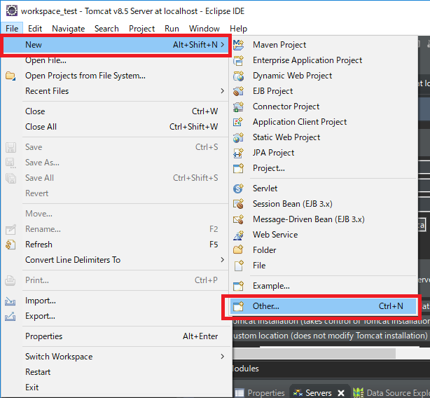
その中で「Web」->「Dynamic Web Project」を選択して「Next」ボタンを押下します。
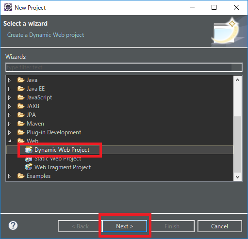
そしてプロジェクト名前とトムキャット設定、「module version」が合っているかを確認して「Finish」ボタンを押下します。
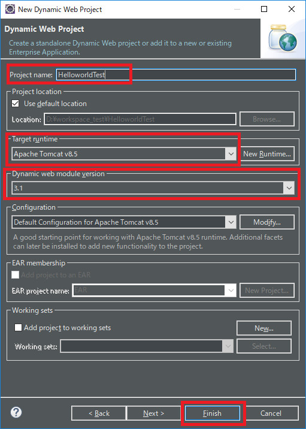
※参考で「Eclipse」をエンタプライズバージョンでインストールしないとウェブサーブレット生成が上手くできない可能性があります。基本Eclipseの場合は上のイメージらしく動作しません。
link - [Java スタディ - 1] Javaとは？、Javaインストール、Eclipseインストール
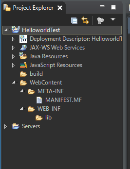
プロジェクトを生成した後、「web.xml」を確認します。もし、「web.xml」がない場合は下記の方法で生成するとよいです。
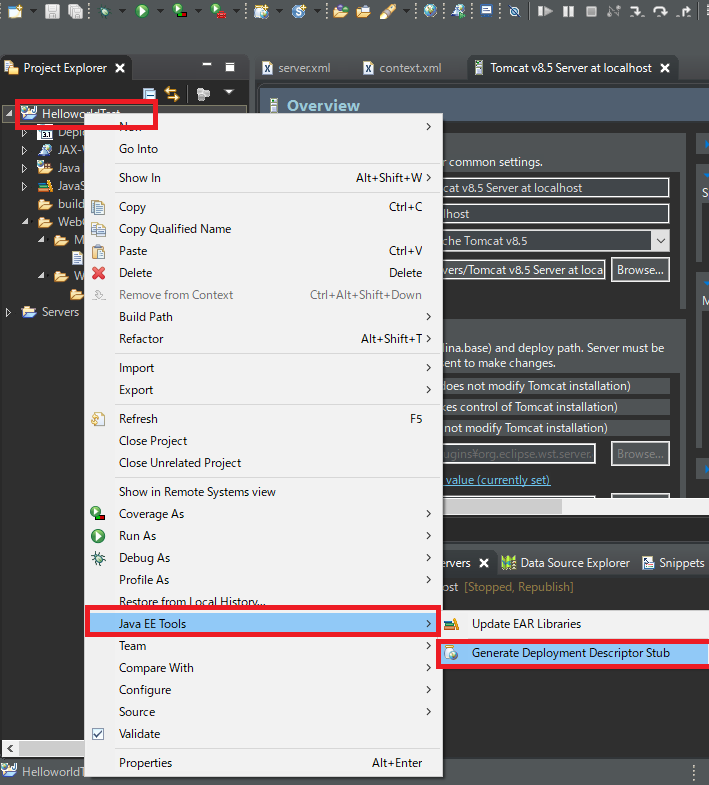
実は以前のバージョンはいつも生成しましたが、いつから「web.xml」が自動に生成しないですね。
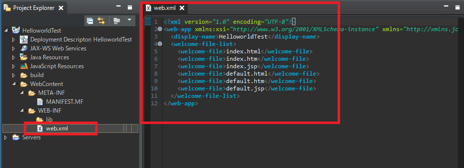
生成したら基本的な内容を確認します。
<?xml version="1.0" encoding="UTF-8"?>
<web-app xmlns:xsi="http://www.w3.org/2001/XMLSchema-instance" xmlns="http://xmlns.jcp.org/xml/ns/javaee" xsi:schemaLocation="http://xmlns.jcp.org/xml/ns/javaee http://xmlns.jcp.org/xml/ns/javaee/web-app_3_1.xsd" version="3.1">
<display-name>HelloworldTest</display-name>
<welcome-file-list>
<welcome-file>index.jsp</welcome-file>
</welcome-file-list>
</web-app>
「welcome-file-list」タグだけありますが、そのタグは基本「root」ページの設定ですね。私の場合は「index.jsp」だけ設定します。
これから「index.jsp」を作成してウェブブラウザで「hello world」が見えるようにします。
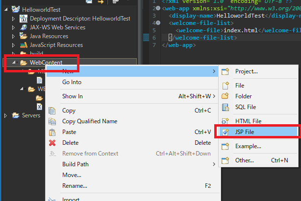
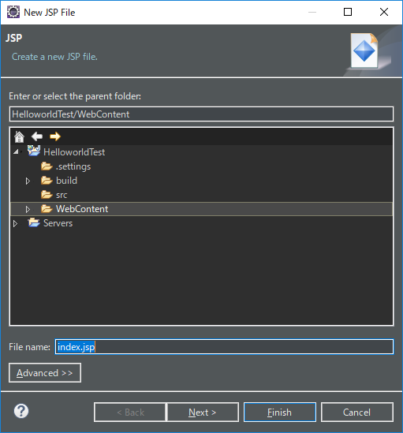
<%@ page language="java" contentType="text/html; charset=UTF-8" pageEncoding="UTF-8"%>
<!DOCTYPE html>
<html>
<head>
<meta charset="UTF-8">
<title>Insert title here</title>
</head>
<body>
Hello world
</body>
</html>
そして起動します。
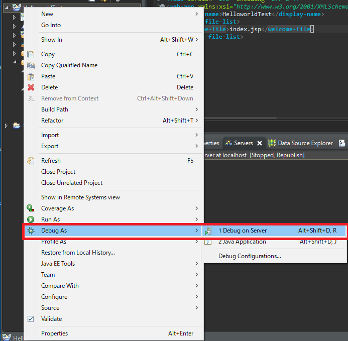
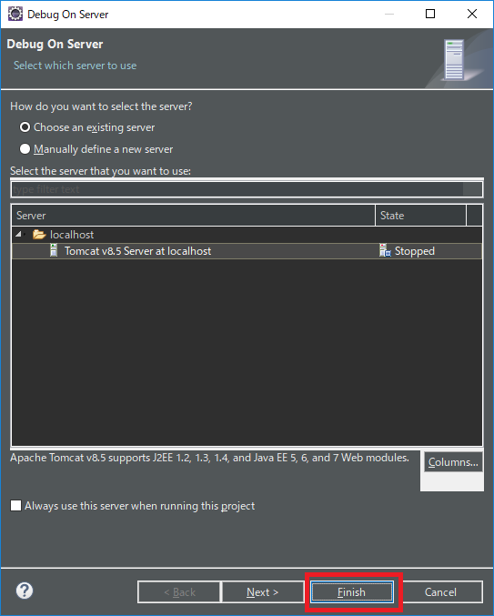
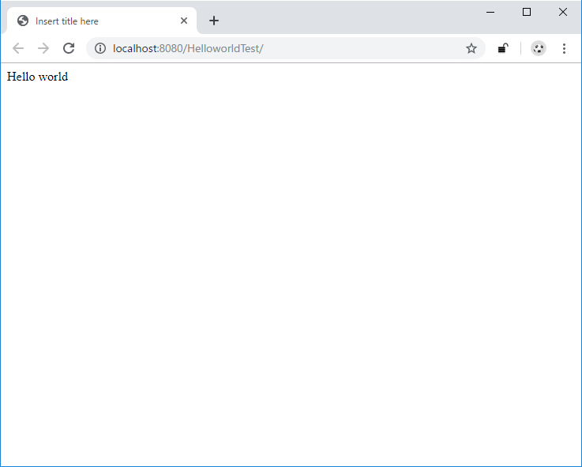
一応、ウェブサービスを起動しましたが、我々が作りたいことは単純なウェブページではなく、サーブレットですね。
サーバをショットダウンします。
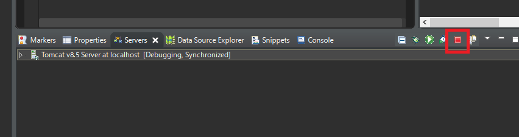
そしてプロジェクトでサブレットを追加します。
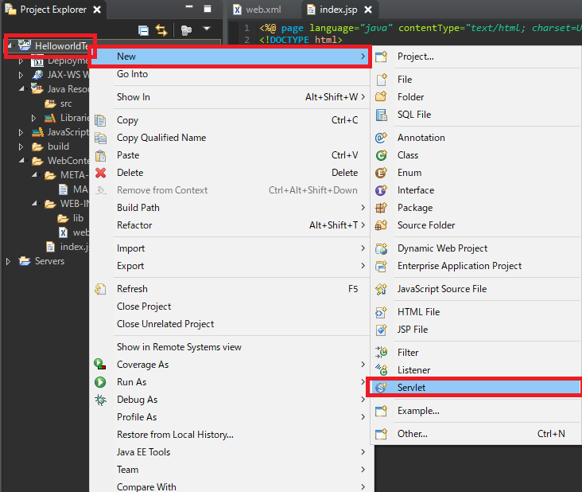
私の場合は「Test」というサーブレットを作りました。
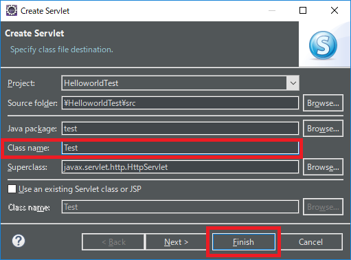
そうしたら下記通りにサーブレットが生成されます。
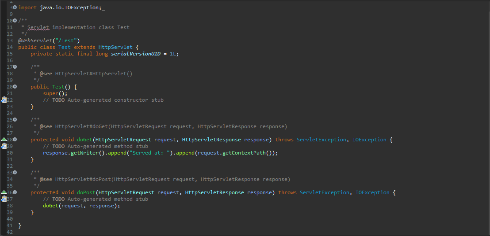
package test;
import java.io.IOException;
import javax.servlet.ServletException;
import javax.servlet.annotation.WebServlet;
import javax.servlet.http.HttpServlet;
import javax.servlet.http.HttpServletRequest;
import javax.servlet.http.HttpServletResponse;
// ページURL
@WebServlet("/Test")
public class Test extends HttpServlet {
private static final long serialVersionUID = 1L;
public Test() {
super();
}
protected void doGet(HttpServletRequest request, HttpServletResponse response)
throws ServletException, IOException {
// これがresponseに送信するhtml領域だ。
response.getWriter().append("Served at: ").append(request.getContextPath());
// 改行を入れて「Hello world」を入れる。
response.getWriter().append("
");
response.getWriter().append("Hello world");
}
protected void doPost(HttpServletRequest request, HttpServletResponse response)
throws ServletException, IOException {
doGet(request, response);
}
}
そしてサーバをもう一度起動します。
私はurlを「/Test」で設定しましたのでウェブブラウザで「Test」で接続します。
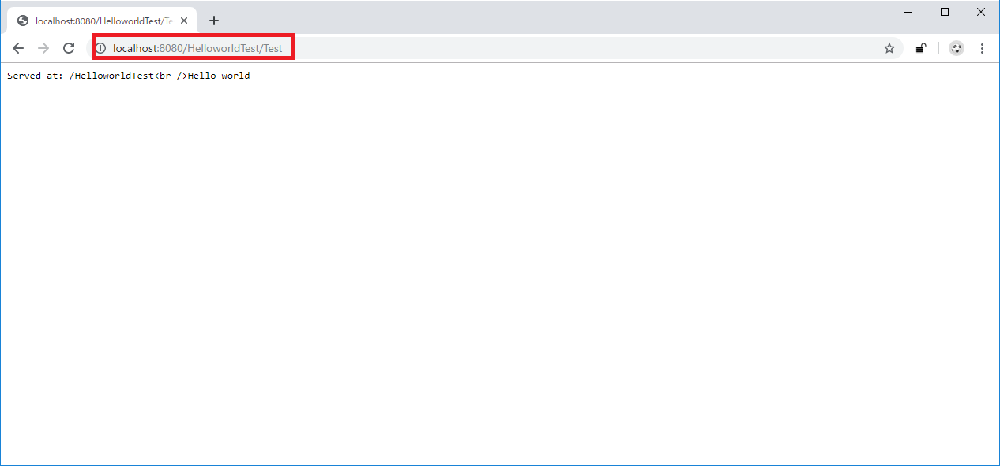
結果は改行タブのそのままに表示されますね。
多分、正常な「Html」ではないからだと思います。正常な「Html」は「」から「」で終わるドキュメンtですね。
なので「html」ドキュメントではなく、ただテキストファイルで認識して表示しました。
※参考に「eclipse」でデフォルトブラウザ設定は「Window」-> 「Web browser」で選択できます。
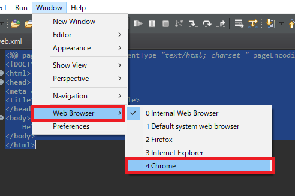
- [Java] Java servletでインスタンスを初期する方法2019/10/17 07:15:48
- [Java] Spring web frameworkで発生する文字化けのEncoding設定2019/10/16 07:32:55
- [Java] Web Spring frameworkでfilter設定2019/10/15 20:12:35
- [Java] Web serviceのweb.xmlでエラーページ設定2019/10/14 20:13:44
- [Java] JPAのDAOをFactoryパターンで管理する方法2019/10/13 22:55:52
- [Java] JPAのSpring frameworkで依存性注入する方法2019/10/13 00:40:08
- [Java] JPAでDAOを生成する方法2019/10/11 07:30:14
- [Java] JPAでトランザクションの使用方法とオブサーバーパターンで共通トランザクション関数を作り方2019/10/10 07:29:43
- [Java] JPAのQuery を作り方2019/10/09 07:34:08
- [Java] JPAのEntityクラス設定(Cascade, fetch)2019/10/08 07:43:33
- [Java] JPAでpersistance.xml設定とentityクラス設定(@GeneratedValue設定)2019/10/07 07:38:13
- [Java] EclipseでJPAフレームワーク設定する方法2019/10/04 19:24:43
- [Java] Web spring frameworkのJSPで使う言語 JSTL - XML2019/10/03 20:02:06
- [Java] Web spring frameworkのJSPで使う言語 JSTL - 関数、データベース2019/10/02 21:00:22
- [Java] Web spring frameworkのJSPで使う言語 JSTL - コアー、フォーマッティング2019/10/01 21:48:08
- [Python] 10. モジュールとパッケージ(import)2020/06/08 19:07:50
- [Python] 09. 例外処理する方法2020/06/05 17:11:47
- [Python] 08. ジェネレータ(Generator)2020/06/04 18:46:08
- [Python] 07. globalとnonlocal2020/06/03 20:34:49
- [Python] 06. 関数(function) - インライン関数、callbak、ラムダ(lambda)そしてクロージャ2020/06/02 20:51:22
- [Python] 05. コンプリヘンション(Comprehension)を使用する方法2020/06/01 19:38:58
- [Python] 04. 制御文(if, while, for, break, continue)とインデント2020/05/29 21:09:08
- [Python] 03. Pythonでリスト(list)とタプル(tuple)、そしてディクショナリ(dictionary)、セット(set)2020/05/27 18:49:08
- [Python] 02. データタイプ、変数宣言そしてコメントする方法2020/05/26 18:16:52
- [Python] 01. Python3をインストールする方法(Anacondaインストール)2020/05/25 19:02:44
- [Java] HttpConnectionを利用してウェブページを取得する方法2020/05/20 23:53:24
- [Java] Jsoupを利用してXMLファイル(HTML)を扱う方法2020/05/19 19:32:21
- [C#] 非同期ソケット通信(IOCP)-APMパターン2020/05/18 18:45:37
- [C#] 非同期ソケット通信(IOCP)-EAPパターン2020/05/15 19:31:02
- [C#] ソケット(Socket)通信をする方法2020/05/13 17:37:13